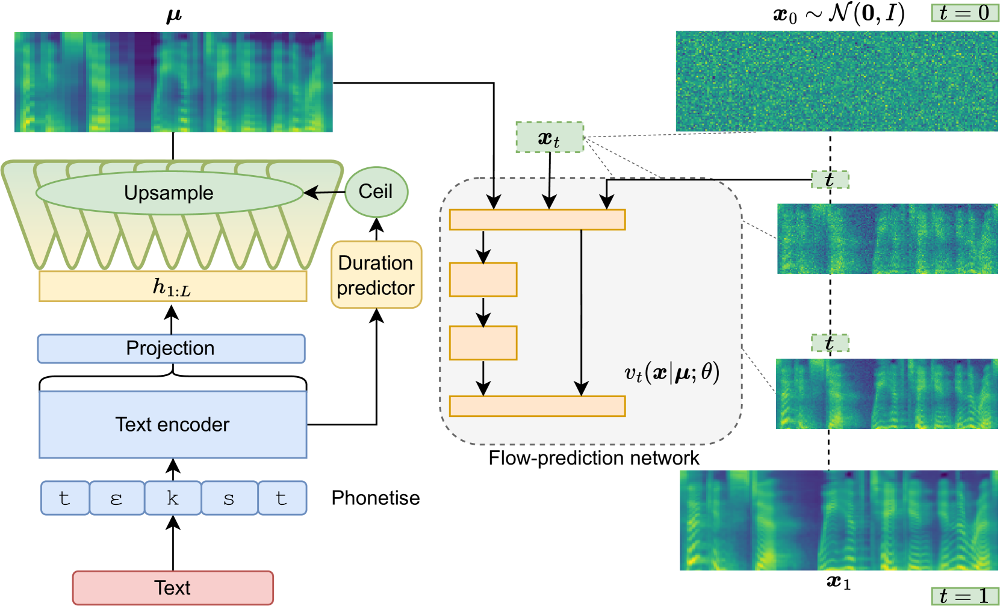
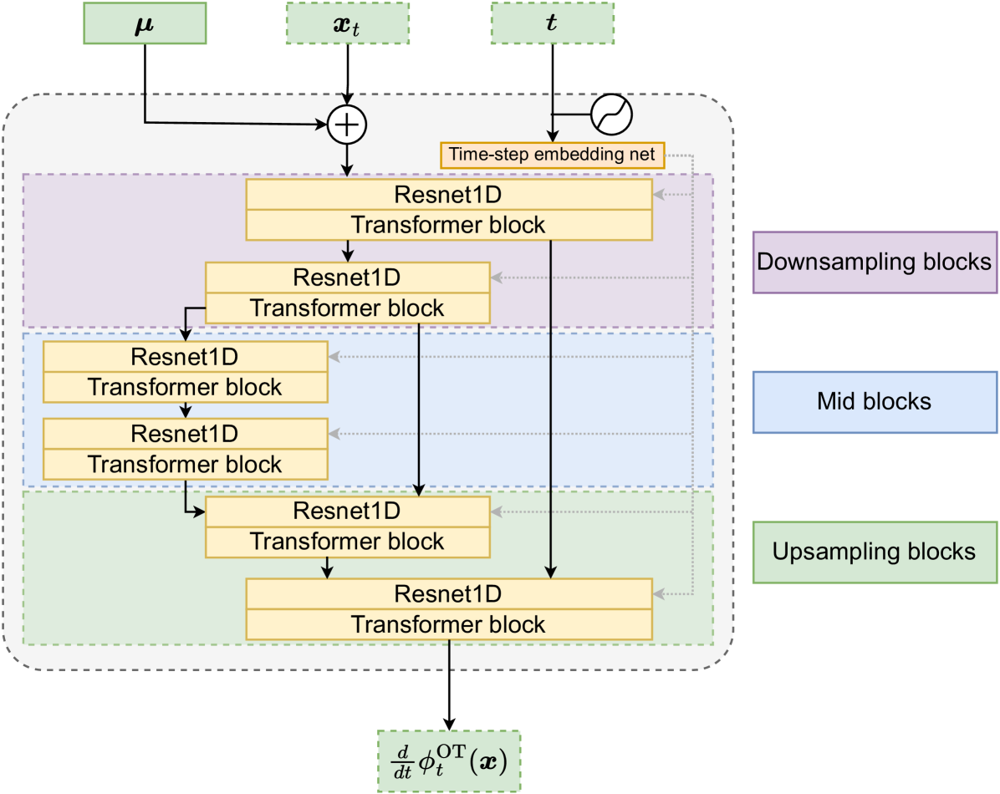
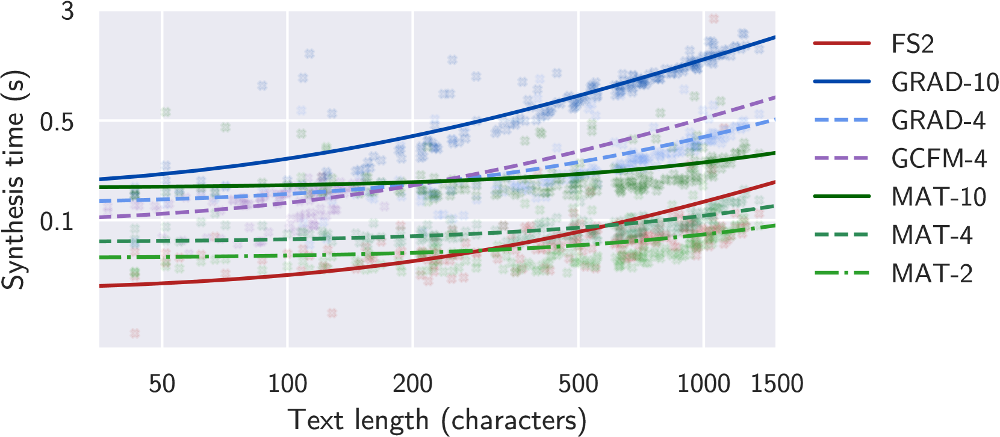

Matcha-TTS: A fast TTS architecture with conditional flow matching
扩散概率模型（Diffusion Probabilistic Models, DPMs）在图像合成、运动合成和语音合成等连续值数据生成任务中取得了突破性进展。然而，DPMs 的核心瓶颈在于合成速度缓慢——每次采样需要多步迭代求解反向 SDE，每步都需要完整神经网络前向推理，这严重制约了其实际应用。
DPMs 通过近似数据分布的得分函数（Score Function）进行训练，训练目标为 MSE 形式，简单高效且不限制模型架构。但生成过程缓慢的问题长期未得到根本解决。尽管基于蒸馏的加速方法（如 ProDiff、CoMoSpeech）已被提出，但这些方法往往以质量换取速度，且训练流程更复杂。
与此同时，Lipman 等人提出的条件流匹配（Conditional Flow Matching, CFM）框架为生成建模提供了全新思路：它通过向量场回归直接学习 ODE，无需数值 ODE 求解器训练，且结合最优传输思想（OT-CFM）可以定义近乎直线的概率路径，使得 ODE 可在极少的离散化步数下精确求解。这从根本上解决了 DPMs 合成慢的问题。
在 TTS 领域，基于扩散的模型（如 Grad-TTS）和离散时间归一化流（如 VITS）已取得出色表现，但连续时间归一化流在 TTS 中尚未被充分探索。Meta 的 Voicebox 是此前的唯一 CFM-based 语音模型公开工作，但它规模庞大（330M 参数）、依赖外部对齐器、使用私有数据，且设计目标不同于纯 TTS。
Matcha-TTS 的动机正是填补这一空白：将 OT-CFM 引入 TTS 声学建模，结合精心设计的编解码器架构，实现概率性、非自回归、从零学习对齐、快速合成、高质量输出的 TTS 系统。
OT-CFM 的核心思想是：在源分布（先验 $p_0 = \mathcal{N}(\boldsymbol{x}; \boldsymbol{0}, \boldsymbol{I})$）与目标数据分布 $q(\boldsymbol{x})$ 之间，构造一条由 ODE 描述的近似直线的概率路径。具体而言，OT-CFM 将每个数据点 $\boldsymbol{x}_1$ 与随机噪声样本 $\boldsymbol{x}_0$ 配对，定义流：
$$\phi^{\mathrm{OT}}_t(\boldsymbol{x}) = (1 - (1 - \sigma_{\min})t)\boldsymbol{x}_0 + t\boldsymbol{x}_1$$对应的梯度向量场为：
$$\boldsymbol{u}^{\mathrm{OT}}_t(\phi^{\mathrm{OT}}_t(\boldsymbol{x}_0)|\boldsymbol{x}_1) = \boldsymbol{x}_1 - (1 - \sigma_{\min})\boldsymbol{x}_0$$该向量场的关键特性：线性、时不变、仅依赖 $\boldsymbol{x}_0$ 和 $\boldsymbol{x}_1$。这意味着 ODE 的路径近乎直线，可用极少的步数精确求解。OT-CFM 的训练目标为：
$$\mathcal{L}(\theta) = \mathbb{E}_{t, q(\boldsymbol{x}_1), p_0(\boldsymbol{x}_0)} \|\boldsymbol{u}^{\mathrm{OT}}_t(\phi^{\mathrm{OT}}_t(\boldsymbol{x})|\boldsymbol{x}_1) - \boldsymbol{v}_t(\phi^{\mathrm{OT}}_t(\boldsymbol{x})|\boldsymbol{\mu};\theta)\|^2$$其中 $\boldsymbol{x}_1$ 为声学帧，$\boldsymbol{\mu}$ 为文本编码器输出的条件均值，$\sigma_{\min}$ 为小常数（实验中设为 1e-4）。与基于得分匹配的 DPMs 相比，OT-CFM 的路径更简单，训练更高效，合成更快。

Matcha-TTS 的文本编码器和时长预测器架构沿用 Grad-TTS 的设计，但将相对位置编码替换为旋转位置编码（RoPE）。RoPE 在计算效率和内存占用上优于相对编码，且对长距离依赖的泛化能力更强。这是首个在 ODE/SDE-based TTS 方法中使用 RoPE 的工作。
对齐和时长建模沿用 Grad-TTS 的机制：训练时使用单调对齐搜索（Monotonic Alignment Search, MAS）和先验损失 $\mathcal{L}_{\mathrm{enc}}$ 快速学习文本-声学对齐；对齐结果用于训练确定性时长预测器（MSE on log-domain）。预测的时长经上取整后对编码器输出进行上采样（重复），得到条件均值 $\boldsymbol{\mu}$。
Matcha-TTS 解码器是一个1D U-Net结构，灵感来自 Stable Diffusion 的 2D U-Net，但将所有 2D 卷积替换为 1D 卷积。理由在于：语音 mel 频谱图沿频率轴不具备平移不变性，2D 解码器的这一隐含假设并不成立，且 2D 卷积引入额外维度增加了内存消耗。

解码器具体设计：
与 Grad-TTS 的 2D U-Net 解码器相比，1D 设计在速度和内存上均有显著优势：1D 卷积操作更快、张量维度更少、内存占用更低。这是 Matcha-TTS 合成速度的关键贡献因素之一。
实验使用 LJ Speech 数据集（女性美式英语朗读公共领域文本的标准划分）。Matcha-TTS（标记为 MAT）的训练配置：
基线系统包括：
ODE-based 模型使用一阶 Euler 前向求解器，合成步数等于函数评估次数（NFE）。实验评估了 NFE 10 及以下的条件，标记为 MAT-$n$、GRAD-$n$、GCFM-$n$（$n$ 为 NFE）。所有声学模型使用预训练 HiFi-GAN LJ_V1 声码器（含去噪滤波器）。所有实验在 NVIDIA RTX 3090 GPU 上进行。
评估涵盖四个维度：
MAT 仅 18.2M 参数，是所有系统中最小的（含声码器后也小于 VITS 的 36.3M）。更重要的是训练时 GPU RAM 占用仅 2.8 GiB（batch size 32, fp16），远低于所有基线：VITS 12.4 GiB、GRAD/GCFM 7.8 GiB、FS2 6.0 GiB。内存占用是制约模型规模和训练可行性的关键因素，Matcha-TTS 在此维度上的优势为更大模型的训练留出了空间。
RTF 结果显示：MAT-2（0.015）接近 FS2（0.010），MAT-4（0.019）与 GRAD-4/GCFM-4 持平。在相同 NFE 下，MAT 均比 GRAD 更快。WER 方面，MAT 在所有 NFE 设置下均具有最低或接近最低的 WER（MAT-10: 2.09, MAT-4: 2.15, MAT-2: 2.34），优于所有基线，表明其合成语音可懂度最高。

MOS 听测结果（95% 置信区间）：
关键发现：
图 3 的散点图清晰展示了合成时间与语音长度的关系：MAT-2 在长语音上合成速度接近 FS2（最快的非概率模型），MAT-4 稍慢但远快于 GRAD-4 和 GCFM-4。回归分析表明，MAT 与 GRAD 的速度差距随语音长度增长而扩大——这主要归功于新架构（1D U-Net），而非训练方法。
论文指出的局限性和未来方向：
此外，值得关注的隐性局限：
Matcha-TTS 是一篇设计思路清晰的论文，其核心创新在于训练方法的更换（OT-CFM vs. score matching）和架构的精简（1D U-Net vs. 2D U-Net）。两个创新点各自贡献了速度和质量提升，消融实验（GCFM 对照组）严谨地验证了这一点。
OT-CFM 的引入是本文最重要的贡献。它从概率路径层面解决了 DPMs 合成慢的根本问题——路径弯曲需要多步求解，而 OT-CFM 的直线路径仅需 2-4 步。这一思路不仅适用于 TTS，对所有 ODE-based 生成模型均有借鉴意义。
1D U-Net 的设计也值得肯定。论文正确指出语音频谱不具备频率轴平移不变性，2D 卷积对此的隐含假设不合理。1D 设计在理论和工程上均更合理，且实际收益显著。
从实用角度看，Matcha-TTS 的小内存占用（2.8 GiB）使得在消费级 GPU 上训练更大模型成为可能，这是区别于许多大模型 TTS 系统的重要优势。代码和检查点公开可得，便于社区使用和改进。
总体而言，Matcha-TTS 是 TTS 领域中流匹配方法的扎实起步工作，为后续多说话人、概率时长建模和大规模数据上的探索奠定了良好基础。